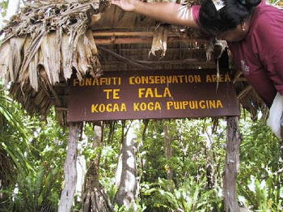

Tuvalu Capitol Building

The Tuvalu capitol building is where the countries prime ministers office resides. All Tuvalu land disputes get handled here.
Tuvalu Philatelic Bureau
Every stamp collectors dream, the Tuvalu Philatelic Bureau office holds stamps as old as 1976. Tuvalu established their own postal service on January 1, 1976 and have been making their own stamps since.
Funafuti airstrip
Funafuti Airstip is the place to be right at sunset. Find all the locals playing pick soccer, volleyball, or just going for a stroll with friends and family. The strip is only used twice a week, tuesday and Thursday morning. The rest of the time the unfenced airport is used for recreational activity and small pop up markets.
Kogatabu Funafuti Conservation Area
The Kogatabu Funafuti Conservation Area is 33 square kilometers of water and land on the west side of the Atoll. There are six islets with native broadleaf forest and coral sand beaches within the protected area filled with many sea creatures and sea birds. A variety of colorful fish and sea turtles can be seen through clear blue lagoon while coral reefs and bommies provide for excellent snorkeling and scuba diving.